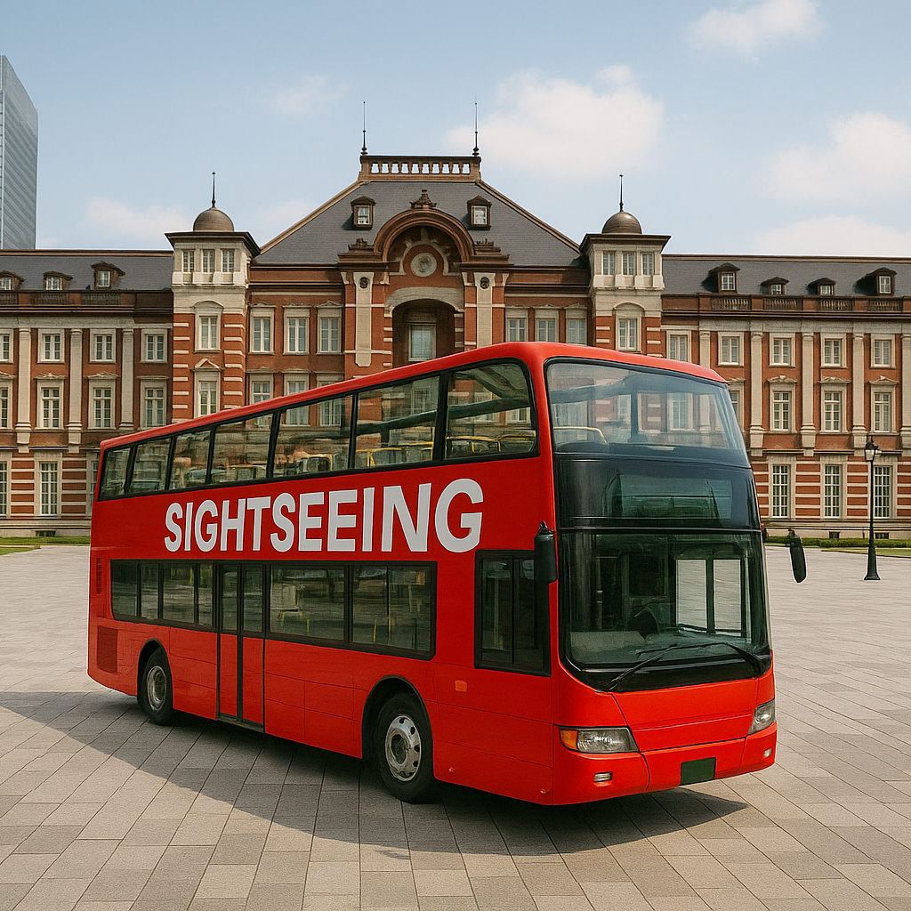

Autobus Turistico in Giappone – Esplora il Giappone con Comfort e Comodità
Gli autobus turistici del Giappone offrono uno dei modi più comodi e completi per esplorare le principali città come Tokyo, Kyoto e Osaka. Con percorsi pratici, guide professionali e supporto multilingue, sono ideali sia per chi visita per la prima volta sia per i viaggiatori esperti.
Esplorazione della Città con Percorsi Panoramici
Questi autobus seguono percorsi attentamente studiati che passano vicino a punti di riferimento e siti culturali famosi, permettendoti di rilassarti mentre ammiri viste panoramiche dal tuo posto. Scegli tra autobus a due piani scoperti, servizi hop-on hop-off o tour guidati in pullman di lusso nelle città più iconiche del Giappone.
Guide Multilingue e Commento dal Vivo
La maggior parte degli autobus turistici offre guide audio dal vivo o registrate disponibili in inglese, cinese, coreano e altre lingue. Guide esperte a bordo forniscono contesto storico, aneddoti locali e consigli utili per arricchire il tuo viaggio.
Percorsi e Destinazioni Popolari
I tour in autobus più richiesti includono l'anello Asakusa–Shibuya di Tokyo, il circuito dei templi di Kyoto con Kiyomizu-dera e Fushimi Inari, e percorsi costieri panoramici vicino al Monte Fuji. Ogni tour è curato per coprire sia le attrazioni più iconiche sia gemme nascoste locali.
Prenotazione e Accessibilità
Prenotare un posto è facile tramite i siti ufficiali o attraverso i concierge degli hotel. Molti autobus offrono accesso per sedie a rotelle, aria condizionata, Wi-Fi gratuito e punti di imbarco comodi vicino alle stazioni ferroviarie. È un modo senza stress per esplorare il Giappone senza dover affrontare i complessi sistemi ferroviari.
Perché Scegliere un Autobus Turistico?
Che tu voglia goderti le viste in totale relax o avere una panoramica narrata dei punti salienti di una città, gli autobus turistici uniscono comfort, apprendimento e accessibilità. È uno dei modi migliori per avere un’introduzione completa alle città giapponesi.
Informazioni per i Visitatori
- 🌸 Città Principali: Tokyo, Kyoto, Osaka, Hiroshima, Fukuoka
- 🌸 Orari: 9:00 – 18:00 (variano in base alla città e al percorso)
- 🌸 Biglietti: ¥1.500–¥4.000 a seconda del percorso e della durata
- 🌸 Punti di Accesso: Stazioni ferroviarie principali e zone turistiche
Tag: autobus turistico Giappone, tour in autobus Tokyo, visite turistiche Kyoto, viaggio in Giappone, hop-on hop-off Giappone, tour guidato in città, trasporto confortevole in Giappone
Stai pianificando di prendere un autobus turistico in Giappone?
Per un'esperienza più coinvolgente e approfondita, ti consigliamo di prenotare una guida turistica privata certificata del nostro team. Tutte le nostre guide sono professionisti autorizzati, ufficialmente riconosciuti dal governo giapponese, e offrono tour personalizzati in base ai tuoi interessi. Contatta in anticipo la guida scelta per confermare la disponibilità e ricevere assistenza esperta per il tuo viaggio.